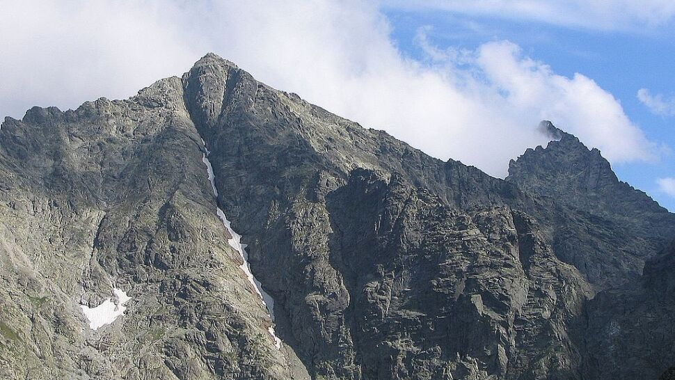

Rysy
góra położona na granicy polsko-słowackiej, w Tatrach Wysokich (jednej z części Tatr). Ma trzy wierzchołki, z których najwyższy jest środkowy (2503 m n.p.m.[1]), znajdujący się w całości na terytorium Słowacji. Wierzchołek północny, przez który biegnie granica, stanowi najwyżej położony punkt Polski (2499 m n.p.m.) i należy do Korony Europy.
Czytaj dalej...
Śnieżka
najwyższy szczyt Karkonoszy oraz Sudetów, jak również Czech, województwa dolnośląskiego, a także całego Śląska. Najwybitniejszy szczyt Polski i Czech (MDW 1203 m). Jego oficjalna wysokość bezwzględna to 1602 m n.p.m.[1][2][3][4] (według Karkonoskiego Parku Narodowego, a także najnowszych pomiarów wartość ta wynosi jednak 1603,296 m n.p.m
Czytaj dalej...
Szrenica
szczyt górski położony w zachodniej części Karkonoszy, w pobliżu granicy państwowej z Czechami, na południe od Szklarskiej Poręby. Doskonały punkt widokowy na Kotlinę Jeleniogórską oraz Góry Izerskie, a także Karkonosze czeskie.
Czytaj dalej...
Trzy Korony
najwyższy szczyt Pienin Środkowych należący do Masywu Trzech Koron
Czytaj dalej...